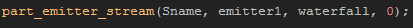

Tutorial
Page 10 of 12
Coding A Stream Emitter
The burst emitter that we have just made is great for explosion effects and other things that need to be created in a moment, but for effects that need to happen every step you should be using a stream emitter.
A stream emitter is set up exactly the same way as a burst emitter, but you only need to command it to stream once with a special function and it will continue to emit particles until told to stop or until it (or
the system it belongs to) is destroyed. This means that they make ideal smoke effects, trail effects or flame effects (for example). In our example we are going to use the stream emitter to create a "waterfall"
firework effect.
To start with, duplicate the first button object and assign it the "spr_Button_Stream" sprite, then open up the create event and place this code into it:
This new particle has some interesting properties, like (for example) it uses the pixel sprite, and has an x scale of 8 and a ysclae of 16. This will stretch the sprite being used by a large amount even before it has
been changed by the size function, and you should note the effect this has on the finished particle. So, do not be afraid to experiment with extreme values as very often the most interesting and spectacular
effects are those you get from this type of experimentation.
The code also includes the emitter, and we are defining it now and only once as we have no intention of moving it at all during the game. once you have finished, clsoe the create event and open up the Step
Event and change the code there to the following:
Here we tell the particle emitter to start streaming particles, with 50 particles being created each step. this is quite a lot, and if the lifetime of each particle is high enough streaming that amount of particles will
quite possibly slow your game down. So, care must be taken when streaming particles in this way to balance the particle life, with the streaming amount and the way both factors affect the gameplay of your game.
We obviously don't want the emitter to stream for ever, so we also need to "switch it off" and prevent it from streaming after a given time, so open up the Alarm[0] event and add this code:

By setting the stream amount to 0 we are telling the emitter to not emit any particles at all. You should note that you can also use negative values for the particle number here, and that will then tell the
emitter to stream particles based mon a random chance. So if you want to have a one in five (1:5) chance of emitting a particle each step, you would use -5 for the number oif particles to stream.
Finally you should add a Room End event with the same clean up code as we used for the particle burst button:
You can now add this button object into the room and test your game. When you are happy, you should save your progress before continuing to the next section where we are gooing to put it all together and create
a complex custom particle effect!
Click on the Next button to go to the next page of the tutorial.